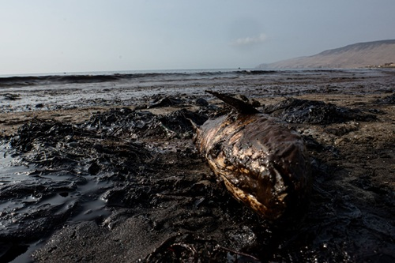

Agonía en el Océano: El Impacto Devastador en la Fauna Marina
El contacto directo con el petróleo es una sentencia de muerte inmediata para aves y mamíferos marinos como nutrias y lobos de mar. El crudo impregna sus plumas y pelaje, destruyendo la capa aislante natural que los protege del frío. Sin esta barrera térmica, los animales mueren por hipotermia o se ahogan al perder la flotabilidad en la superficie.
Bajo la superficie, el horror continúa mediante un ciclo de intoxicación letal. Al intentar limpiar sus cuerpos, los animales ingieren hidrocarburos que les destrozan el sistema digestivo y dañan órganos vitales. Asimismo, los peces absorben químicos a través de sus branquias, lo que les provoca asfixia, ceguera y mutaciones genéticas que anulan su reproducción.